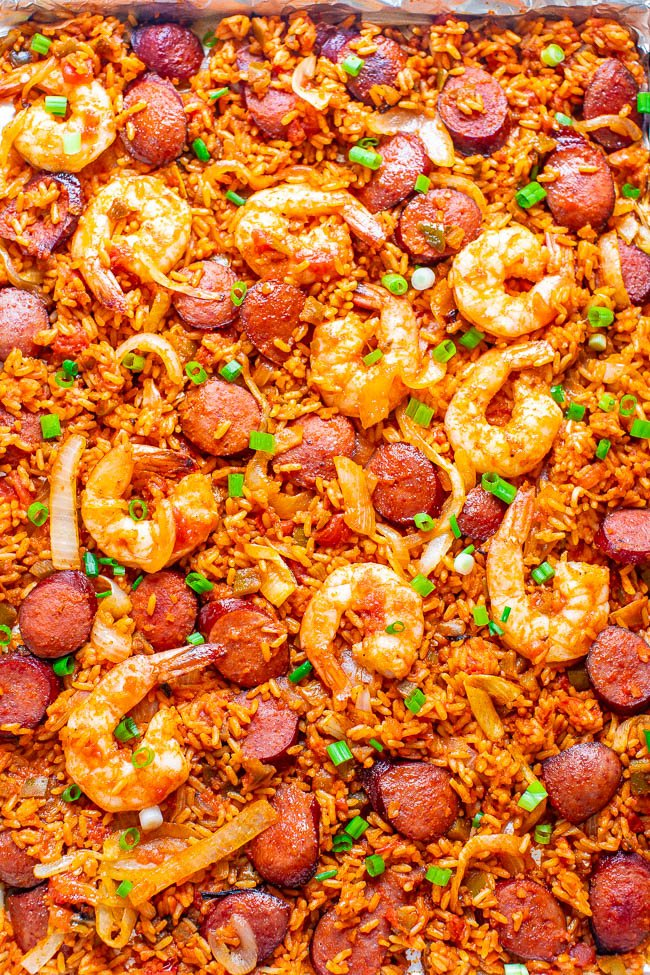

Sheet Pan Jambalaya

Description
A fast, easy, and flavor packed jambalaya shortcut. This recipe gets dinner on the table in less than 30 minutes and is always a hit. Plenty of flavor for folks with adventurous taste buds but not so much that you're left sweating in your chair. This is a great weeknight recipe for any family's rotation.
Ingredients
6 ounces andouille sausage
1-1/2 cups sliced yellow onion
2 tablespoons olive oil
2 teaspoons creole seasoning
12 ounces large peeled deveined raw shrimp
16 ounces microwavable rice. Can be white or brown
1-1/2 cups chunky salsa
1/2 cup thinly sliced scallions
Steps
Preheat oven to 425°. While oven is preheating slice sausage and onions.
Toss onions and sausage with 1 tablespoons oil and 1/2
Spread onions and sausage evenly across a large rimmed baking sheet. Place in the oven for approximately 8 minutes or until the onions are soft
While the onions and sausage cook toss shrimp with 1 teaspoon creole seasoning and 1 tablespoon oil. Microwave 16 ounces of rice at this time, approximately two bags
Remove pan from the oven and add the shrimp in an even layer over the sausage mixture. Bake for approximately 4 minutes or until the shrimp is pink
Combine rice with the salsa and 1/2 teaspoon of creole seasoning
Remove pan from the oven, spoon rice mixture over and around the shrimp and sausage mixture. Return to oven for approximately minutes
Remove from oven, sprinkle with sliced scallions. Serve hot
Enjoy!